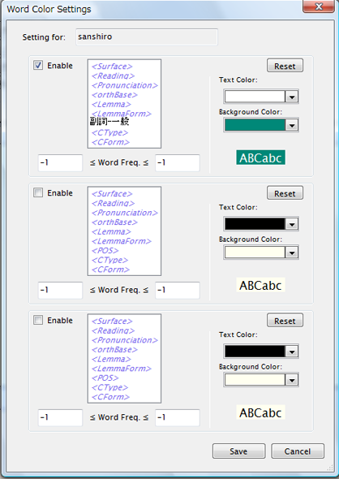
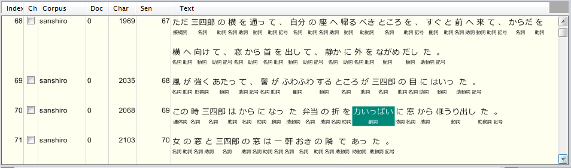

KWIC Viewには、特定の条件に一致する語を前景色・背景色を用いて強調表示する機能があります。
メニューから"Options" - "Word Color Settings..." をクリックし、下図のダイアログを表示させます。

画面にあるように、コーパス（条件の"Corpus"タブで選択されているコーパス）ごとに３種類のフィルタ条件を定義できます。
各フィルタは、"Enable"チェックボックスがONのときにのみ有効で、フィルタ条件の本体はTag Search条件の語条件Boxと同じものとなっています。つまり、上図の例だとPartOfSpeechが「副詞-一般」である語が強調表示の対象になります。
さらにその直下に"Word Freq"という部分がありますが、これは語彙形の条件に加えて語彙のコーパス内での出現頻度による条件をANDで付加する場合に使用します。この例では、1 ≦ Word Freq ≦ 1 となっていますので、コーパス内で1回のみ出現するような「副詞-一般」の語が強調表示対象となります。
このように条件を決めた上で、右の部分で強調方法を指定します。"Text Color", "Background Color"がその指定であり、それぞれ語の前景色、背景色を意味します。下部に、実際にどのように見えるかのサンプルが表示されるようになっています。
"Reset"ボタンは、デフォルト（強調表示なし）状態に戻す時にクリックします。
この設定内容は、ユーザのローカルフォルダ（Vistaの場合だと"Local Settings\ChaKi.NET）の"WordColorSettings.xml"にセーブされます。
強調表示の適用結果の例を下図に示します。

複数の条件に合致する場合、上の条件から見て最初に合致したものだけが強調表示に使用されます。